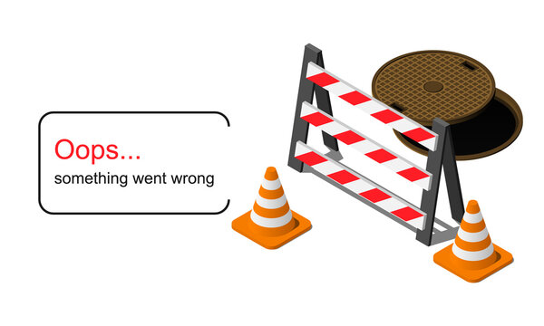

<div class="w-100 h-100 d-flex justify-content-center align-items-center">
    <div *ngIf="this.getQuestinos.loading">
        <app-spiner-loading size="small" color="white"></app-spiner-loading>
    </div>
    <div *ngIf="this.getQuestinos.error">
        <div class="w-25">
            <figure class="img-fluid rounded">
                
            </figure>
        </div>
    </div>
    <router-outlet />
</div>
